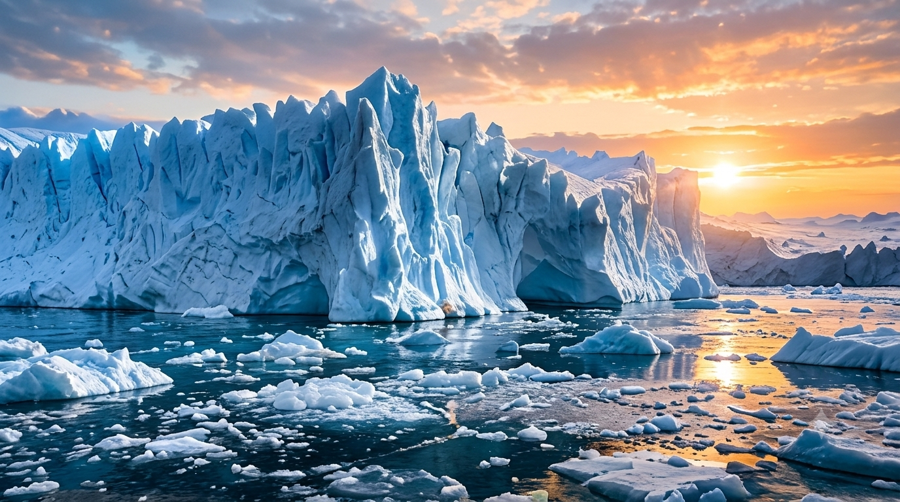

What If Scenario
What Will Life Be Like When the World's Last Ice Melts?
Explore what the loss of the planet's major ice sheets and glaciers could mean for sea levels, coastal cities, freshwater, wildlife, and the future of human settlements.
Read the featured guide
Climate · Ice sheets · Rising seas